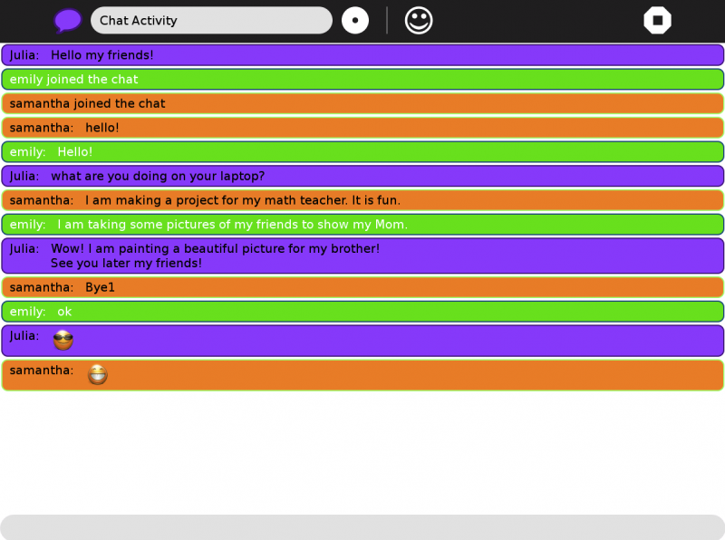
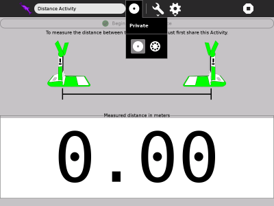

Collaborating¶
About Collaborating¶
Talk, share and work together with your friends and peers using collaboration.
One of the most important features of Sugar is the ability for you to collaborate (chat!) and share a project that you are working on with others. This can take the form of multiple cursors in a document, multiple musical instruments, two players in a game, multiple uses in chat (as above), and so on.
If you want to share with one of your friends, inside the Activity that you want share, click on the “Home” icon that says “Private” then click on the “Neighborhood” icon, like below.

This will make it available to all other persons connected to your same Ad-hock network. An icon of the Activity you are sharing will appear in the Neighborhood view inviting others to join. To join, all they will need to do is hover over the icon of the Activity you are sharing and click join. (This is also how you join the work of others when they share with you).

Where to get Collaborating¶
Collaborating is a built-in function in the following Activities provided in the current Sugar distribution:
- Browse
- Calculate
- Chat
- Distance
- Etoys
- Image Viewer (not marked Favorite)
- Implode
- Maze
- Memorize
- Pippy
- Read
- Record
- Speak
- TamTamMini
- TamTamJam
- Turtle Art
- Write
Note
Not all Activities are able to collaborate. There are many others available in the Sugar Labs Activities repository